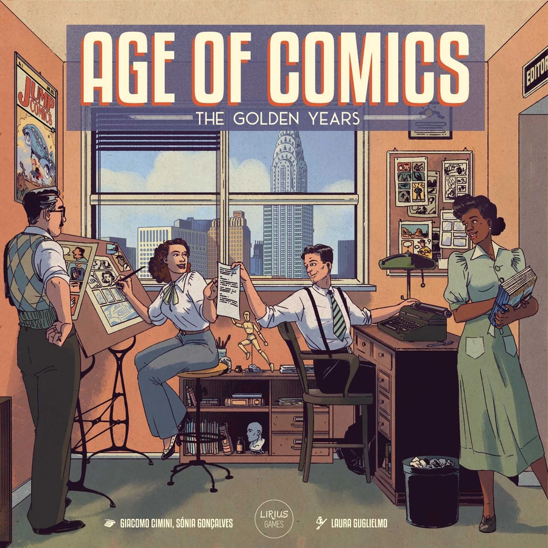

A publishing tycoon yarn set in Manhattan, 1938–1954
Based on the board game by Sónia Gonçalves & Giacomo Cimini · Artwork by Laura GuglielmoVideogame reinterpretation · The Print Edition, est. 1938